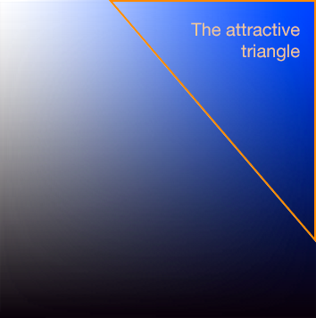

Returns a random color.
randomColor()
// Returned ''
Returns a random color in the hue range specified in the options object.
randomColor({hue: 'orange'})
// Returned ''
Returns a color which contrasts with orange
randomColor({hue: {contrasts: 'orange'}})
// Returned ''
Generating random colors is simple. There are lots of neat one-liners for producting a hex code at random. Here's one from Paul Irish:
'#'+Math.floor(Math.random()*16777215).toString(16);
If we run this code a few times we get colors that look like this:
Since all the code does is pick at random in the 24bit color space, we naturally end up with lots of browns and greys and murky greens.
So I wrote a library which by default would generate bright and attractive colors at random. But I also wanted options to control the hue and brightness of the colors too.
Random colors might be useful for data visualizations, generative art, video games or just making your UI slightly more interesting
The goal of the function is to return colors of a random hue with high luminosity. We'll use the [HSV color space](http://en.wikipedia.org/wiki/HSL_and_HSV) to determine a color since I find HSV more intuitive than RGB for working with luminosity.
First we pick a hue value (H) at random. H corresponds to the angle on the surface of the HSV cylinder.
By default, H is picked randomly between 0 and 360. If a hue preference is specified then the range of possible H values is restricted. For example, we'd classify orange hues as lying between an H value of 18 and 46.
If you look at a representation of the HSV color space, there's roughly a region of attractive colors to the top right for each H value between 0 and 360.
Pick lighter colors from the top left of this region. Pick darker colors from the lower right of this triangle.
If 'dull' pick outside the attractive triangle
The attractive triangle will vary in area, but since hue is picked randomly the distribution of colors should be even, though the distribution of luminosities will vary at different hues.
I could pick a random color from the dictionary first, then a random hue within that hue range.
This would normalize for different colors, since there are more red hues on the HSV spectrum than yellow hues. This is super cultural.
Perceived luminance is hard to represent digitally. Colors are quite complicated cultural constructs Nevertheless it's useful to generate attractive colors.
When generating multiple colors, try to make them distinct.
Regenerate demos